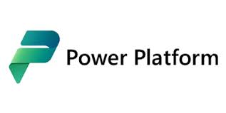

2016 - PowerApps e Microsoft Flow

2016 foi o ano em que a Microsoft revolucionou a maneira de criar aplicativos e automatizar processos de negócios. O PowerApps permitiu que usuários sem experiência em programação desenvolvessem aplicativos personalizados. Já o Microsoft Flow, que posteriormente se tornou o Power Automate, trouxe automação inteligente para tarefas repetitivas.
2018 - Power BI e Power Automate

A Microsoft unificou suas ferramentas na Power Platform. O Power BI trouxe análise de dados interativa, enquanto o Power Automate (antigo Flow) ampliou a capacidade de automação, conectando diferentes serviços e aplicativos.
2019 - Power Virtual Agents

O Power Virtual Agents foi lançado, permitindo a criação de chatbots inteligentes. Empresas puderam automatizar interações com clientes sem necessidade de programação, melhorando suporte e atendimento.
2020 - Melhorias e Integrações

A Microsoft introduziu o AI Builder. Esse recurso trouxe inteligência artificial acessível, permitindo reconhecimento de imagem, previsões e análise de dados avançada na Power Platform.
2025 - Estado Atual da Power Platform
A Power Platform continua sua evolução com integração de inteligência artificial e automação. O Copilot foi incorporado para facilitar a criação de aplicativos, automação de fluxos de trabalho e análise de dados complexos.